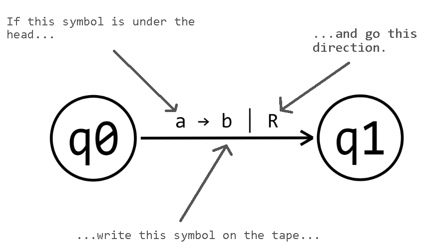

Welcome to the site! This tool presumes you have some basic understanding of what a Turing machine is and how it works.
You can navigate through either window by left-click and dragging a blank space to pan, and by using the scroll wheel to zoom in and out.
To adjust the size of the windows, left-click and drag the line separating them.
The top window is where you can write inputs on the tape, run the Turing machine on the tape, and view its operation.
To write an input on the tape, click on the tape and enter the desired input into the text prompt. This will reset the state of the Turing machine.
The large box beneath the tape indicates the current state of the Turing machine. It will turn red upon halting while not in an accepting state, and turn green upon reaching an accepting state.
The two black triangles indicate the head of the Turing machine.
The three buttons in the bottom left allow you to operate the Turing machine.
The bottom window is where you program the Turing machine by constructing a finite state machine.
To create a new state, shift + left-click on a blank spot. The first state you place will automatically become the initial state of the Turing machine. This is indicated by a one-directional arrow pointing into the state.
To set a state to the initial state, ctrl + left click on it.
To delete a state, press X while hovering over it.
To set a state to as an accepting state, alt + left click on it.
To move a state, left-click and drag it.
To add a transition, shift + left-click and drag from the starting node to the ending node. You will then be prompted for three text inputs, indicated by a blinking cursor above the newly created arrow.
The first symbol you type in is the symbol that must be read on the tape for the transition to take place.
The second symbol you type is what the Turing machine will write on the tape upon taking the transition.
The final symbol, which must be either 'l' or 'r', determines the direction the Turing machine will go after writing on the tape (left or right, respectively).
Use the underscore key to indicate a space. Click anywhere on the window to cancel creating the transition.
Left-click and drag on an existing transition to bend it.
Because this is a non-deterministic Turing machine, you will not be able to make multiple transitions going out of a state which all require the same symbol to be read from the tape.